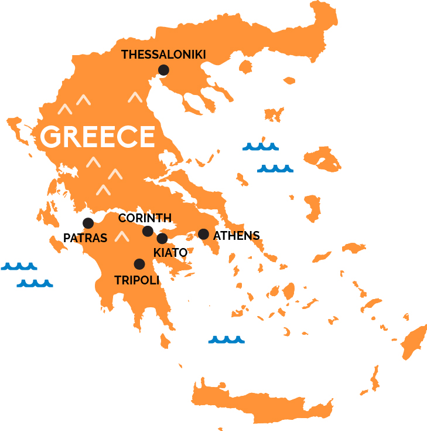
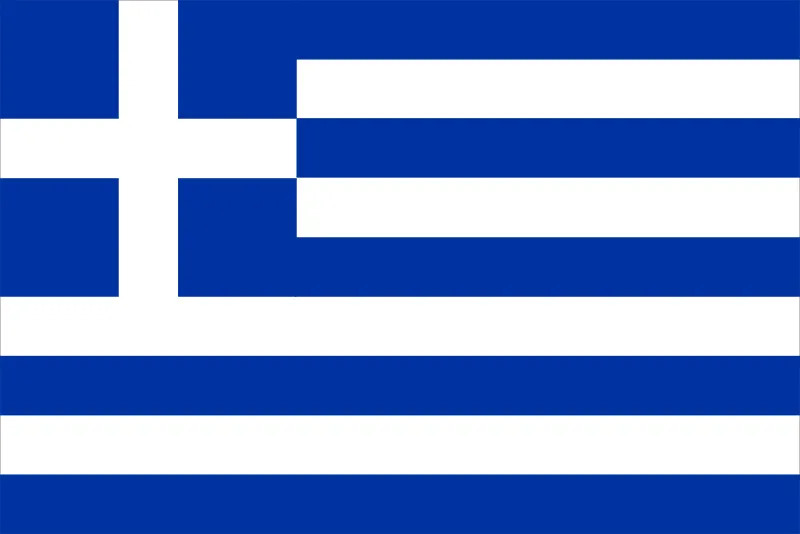

טיול היובל

Location:
 Date: Unknown
Plan
Land in Athens and pick up your jeep. Begin your drive to Mount Olympus (approx. 4.5 hours).
Arrive in Litochoro, a charming village at the foot of Mount Olympus. Settle into your accommodation.
Explore the trails of Mount Olympus National Park. Suggested highlights include:
- Jeep tracks to the Enipeas Gorge and Orlias Waterfalls.
- Drive up to Prionia, the highest point accessible by vehicle.
- Visit Old Panteleimon, a traditional mountain village with stunning views.
Travel northwest to Zagori (approx. 3.5 hours).
Begin exploring Zagori's scenic villages, arched stone bridges, and jeep trails around the Vikos Gorge.
Focus on Zagori's remote trails and highlights:
- Jeep tracks through Vikos-Aoos National Park.
- Scenic drives to remote villages like Vikos or Dilofo.
- Optional short hike in Vikos Gorge or a visit to the Drakolimni alpine lakes (starting from Papingo).
Day trip to Prespa Lakes with off-road exploration and birdwatching.
Highlights include:
- Off-road trails around the lakes.
- Visit Agios Achilleios Island (accessible via a footbridge).
- Birdwatching for pelicans and other species.
Depart Zagori and head back to Athens (approx. 5 hours).
Optional stop at Meteora monasteries along the way.